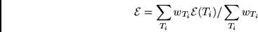
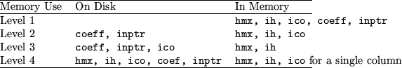

In the next phase the eigenvalue is solved, and the mixing coefficients  are updated.
During this phase diag() performs the process referred to as a "simultaneous optimization" in three distinctive steps. During the first step the matrix elements are assembled and the matrix diagonalized. Diagonalization occurs in the one of the routines diag_memory_all(),diag_disk_clst(), diag_disk_ico(),diag_disk_hmx(). The differ in the storage methods which are used as function of available memory. The main loop is over all coefficients, tt coeff, which are contained in file c.lst. It is a complicated loop with a number of logical statements and it includes single and double precision arithmetics, this reduces the optimization of the Mflop performance to less than 30% of theoretical possible for floating point calculations. The fastest routine is diag_memory_all(), it does not include any disk IO. The main loop is shown below:
do ii = 1, n_cf;
n_count_tmp = ncoef+ii
if (ii.gt.ico(nijcurr+nz)) nijcurr = nijcurr + 1
hmx(nijcurr) = hmx(nijcurr) +
: coeff(n_count_tmp)*value(inptr(n_count_tmp))
if (nijcurr.gt.jptr(jjh)) then
jjh = jjh + 1;
max_col = max_col+1
end if
end do
This fragment combines the matrix elements based on the information about the column index ico, the column pointer jptr and the coefficient coeff. The rest of the diag_*() routines perform the same task, however apply disk IO to a various degree, with the worst case being diag_disk_hmx(), which reads each of the files c.lst, ih.nn.lst, ico.lst.
The next step computes the selected eigenvalues using the Davidson algorithm. The eigenvectors for each requested eigenvalue are saved and applied for updating the coefficients. This steps proceeds consequently for each block, after the last step the weighted total energy is computed an displayed during each iteration.
The optimization is performed on the functional
The listing below shows the complexity of the coefficient updating process.
if (iblock == 1) ncoef = 0;
do i = 1, cf_tot(iblock);
n_count_tmp = ncoef+i
if (i.gt.ico(nijcurr)) then
nijcurr = nijcurr + 1
* .. have we also changed column?
if (nijcurr.gt.jptr(max_col)) then
jjh = jjh + 1;
max_col = max_col+1
end if
end if
iih = ihh(nijcurr)
im1 = 0;
do j = 1,maxev
ioffw = (j-1)*ncfg
if (leigen(j,iblock)) then
wcoef = eigst_weight(j,iblock)
W = wcoef*wt(ioffw+iih)*wt(ioffw+jjh)
T = W*coeff(n_count_tmp)
IF (IIH .NE. JJH) T = T+T
coef(inptr(n_count_tmp)) = coef(inptr(n_count_tmp)) + T
if (last) then
W0 = wt(ioffw+iih)*wt(ioffw+jjh);
T0 = W0*coeff(n_count_tmp);
IF (IIH .NE. JJH) T0 = T0 + T0;
itmp_s = (inptr(n_count_tmp))+idim*im1;
tmp_coef(itmp_s) = tmp_coef(itmp_s) + T0;
im1 = im1 + 1;
end if
end if
end do
end do
Figure 6.18 shows the implementation and the call sequence in diag().
|  |
There are special storage requirements for each step: Arrays (hmx_diag), inptr, coeff and ico are accessed only once. In contrast, the iterative solution of the eigenvalue problem (dvdson) requires multiple read access operations on the interaction matrix (only hmx and ih are used). Therefore, higher priority for storing in memory was given to hmx and ih. After dvdson the memory used in diag_hmx and dvdson is deallo cated and used in updatc. Finally, updating the coefficients requires a single access to ih, and ico suggesting higher priority for ico over coeff. Table 6.3 shows the multilevel storage scheduling derived from the frequency of data access. The storage scheduling will depend on the size of the problem and the system capacity and mchf is designed to select the best level with respect to computational efficiency.